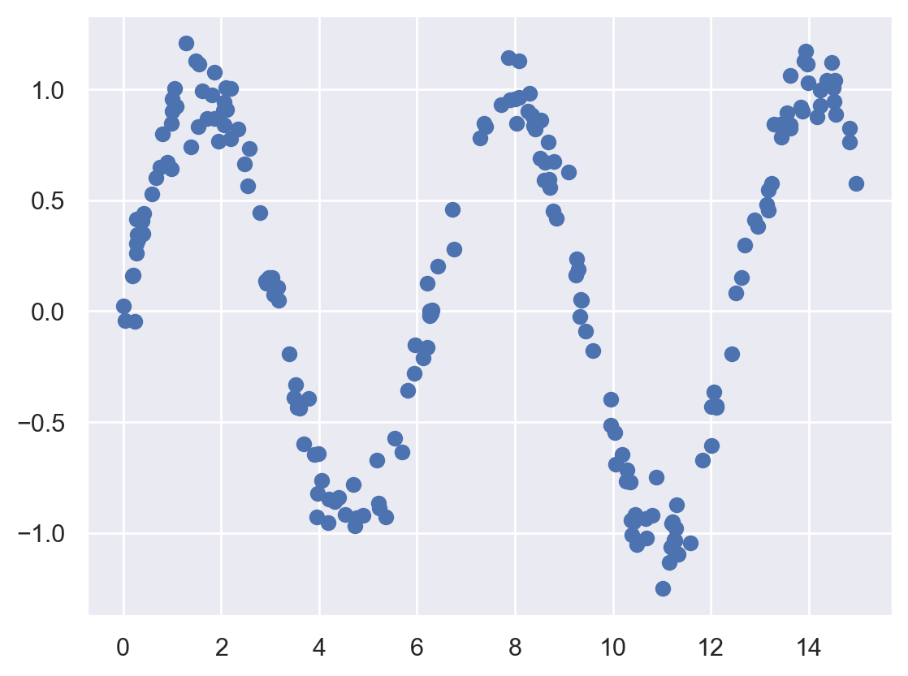
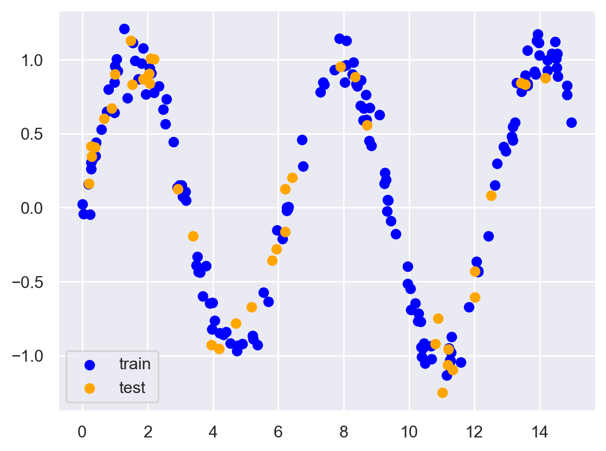
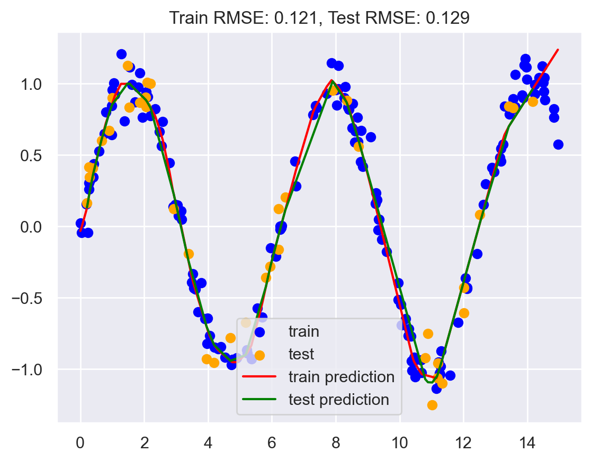
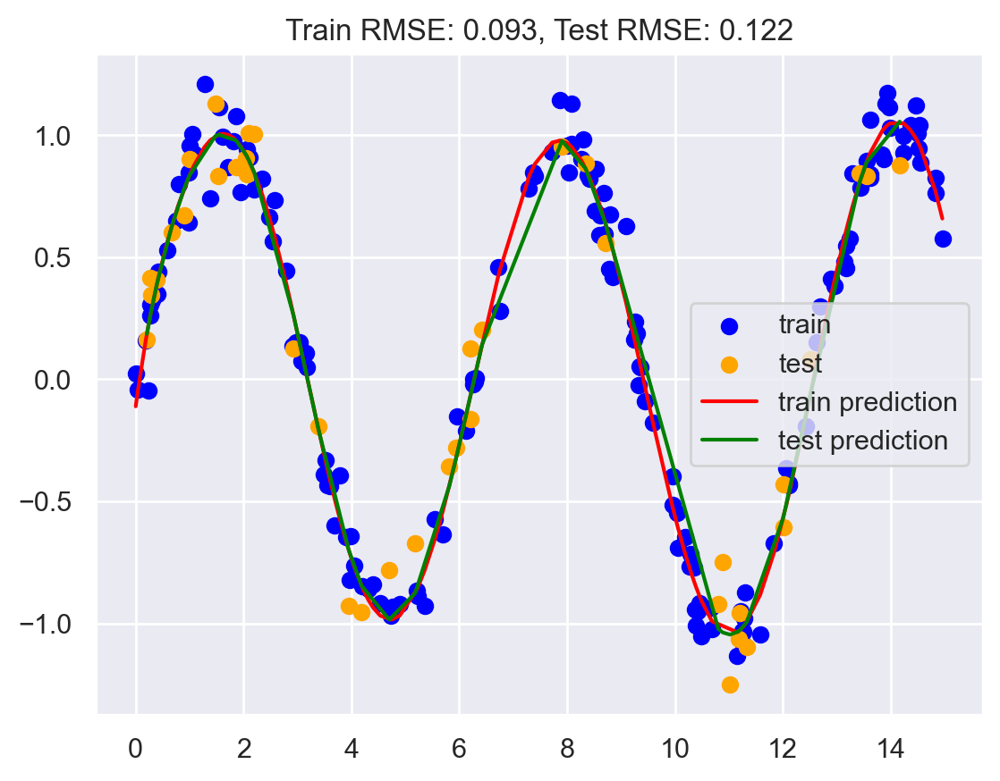
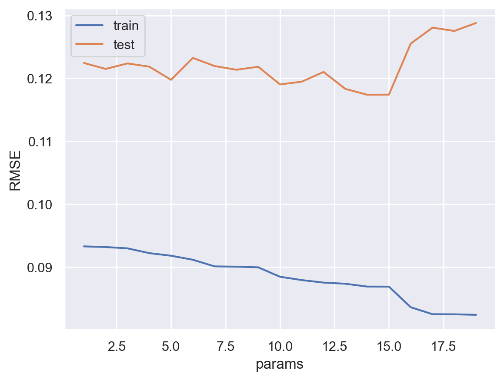

import matplotlib.pyplot as plt
import seaborn as sns; sns.set()
import numpy as np
import pandas as pd
from sklearn.linear_model import LinearRegression
from sklearn.preprocessing import PolynomialFeatures
from sklearn.neural_network import MLPRegressor
from sklearn.model_selection import train_test_split
from sklearn.pipeline import make_pipeline
from sklearn.base import BaseEstimator, TransformerMixin
# Retina mode
%config InlineBackend.figure_format = 'retina'
%matplotlib inlineBasis Expansion in Linear Regression
ML
Dataset 1: Sine wave with noise
# Generate some data
rng = np.random.RandomState(1)
x = 15 * rng.rand(200)
y = np.sin(x) + 0.1 * rng.randn(200)
df = pd.DataFrame({'x': x, 'y': y})
# plot the data
plt.scatter(df.x, df.y)
plt.show()
# Train test split
train = df.sample(frac=0.8, random_state=1)
test = df.drop(train.index)
plt.scatter(train.x, train.y, color='blue', label='train')
plt.scatter(test.x, test.y, color='orange', label='test')
plt.legend()
plt.show()
def plot_predictions(train, test, yhat_train, yhat_test):
# add yhat_train to train and yhat_test to test
train['yhat'] = yhat_train
test['yhat'] = yhat_test
# sort train and test by x
train = train.sort_values(by='x')
test = test.sort_values(by='x')
# Train and test error
train_rmse = np.sqrt(np.mean((train.yhat - train.y)**2))
test_rmse = np.sqrt(np.mean((test.yhat - test.y)**2))
plt.scatter(train.x, train.y, color='blue', label='train')
plt.scatter(test.x, test.y, color='orange', label='test')
plt.plot(train.x, train.yhat, color='red', label='train prediction')
plt.plot(test.x, test.yhat, color='green', label='test prediction')
plt.title('Train RMSE: {:.3f}, Test RMSE: {:.3f}'.format(train_rmse, test_rmse))
plt.legend()
plt.show()
return train_rmse, test_rmse# Hyperparameter tuning using grid search and showing bias variance tradeoff
def hyperparameter_tuning(params, train, test, model):
train_rmse = []
test_rmse = []
for d in params:
yhat_train, yhat_test = model(d, train, test)
train_rmse.append(np.sqrt(np.mean((yhat_train - train.y)**2)))
test_rmse.append(np.sqrt(np.mean((yhat_test - test.y)**2)))
plt.plot(params, train_rmse, label='train')
plt.plot(params, test_rmse, label='test')
plt.xlabel('params')
plt.ylabel('RMSE')
plt.legend()
plt.show()
optimal_param = params[np.argmin(test_rmse)]
return optimal_paramrmse_dict = {}Model 1: MLP
# use sk-learn for MLP
mlp_model = MLPRegressor(hidden_layer_sizes=[128, 256, 512, 256, 128], max_iter = 10000)
mlp_model.fit(np.array(train.x).reshape(-1, 1), train.y)MLPRegressor(hidden_layer_sizes=[128, 256, 512, 256, 128], max_iter=10000)In a Jupyter environment, please rerun this cell to show the HTML representation or trust the notebook.
On GitHub, the HTML representation is unable to render, please try loading this page with nbviewer.org.
MLPRegressor(hidden_layer_sizes=[128, 256, 512, 256, 128], max_iter=10000)
yhat_train = mlp_model.predict(np.array(train.x).reshape(-1, 1))
yhat_test = mlp_model.predict(np.array(test.x).reshape(-1, 1))
train_rmse, test_rmse = plot_predictions(train, test, yhat_train, yhat_test)
rmse_dict['MLP'] = (train_rmse, test_rmse)
Model 2: Vanilla Linear Regression
lr1 = LinearRegression()
lr1.fit(np.array(train.x).reshape(-1, 1), train.y)LinearRegression()In a Jupyter environment, please rerun this cell to show the HTML representation or trust the notebook.
On GitHub, the HTML representation is unable to render, please try loading this page with nbviewer.org.
LinearRegression()
yhat_train = lr1.predict(np.array(train.x).reshape(-1, 1))
yhat_test = lr1.predict(np.array(test.x).reshape(-1, 1))
train_rmse, test_rmse = plot_predictions(train, test, yhat_train, yhat_test)
rmse_dict['Vanilla LR'] = (train_rmse, test_rmse)
Model 3: Polynomial regression with degree d
def poly_regression(d, train, test):
lr = LinearRegression()
pf = PolynomialFeatures(degree=d)
X_train = pf.fit_transform(train.x.values.reshape(-1, 1))
X_test = pf.fit_transform(test.x.values.reshape(-1, 1))
lr.fit(X_train, train.y)
yhat_train = lr.predict(X_train)
yhat_test = lr.predict(X_test)
return yhat_train, yhat_test# Hyperparameter tuning using grid search and showing bias variance tradeoff
degrees = range(1, 20)
best_degree = hyperparameter_tuning(degrees, train, test, poly_regression)
yhat_train, yhat_test = poly_regression(best_degree, train, test)
train_rmse, test_rmse = plot_predictions(train, test, yhat_train, yhat_test)
rmse_dict['Polynomial Regression'] = (train_rmse, test_rmse)
print("Best degree: ", best_degree)

Model 4: Linear regression with sine and cosine basis functions
def sine_basis_regression(num_basis, train, test):
lr = LinearRegression()
for i in range(1, num_basis+1):
train[f"sine_{i}"] = np.sin(i*train.x)
train[f"cosine_{i}"] = np.cos(i*train.x)
test[f"sine_{i}"] = np.sin(i*test.x)
test[f"cosine_{i}"] = np.cos(i*test.x)
X_train = train.drop(['y'], axis=1)
X_test = test.drop(['y'], axis=1)
lr.fit(X_train, train.y)
yhat_train = lr.predict(X_train)
yhat_test = lr.predict(X_test)
return yhat_train, yhat_testbasis = range(1, 20)
best_num_basis = hyperparameter_tuning(basis, train, test, sine_basis_regression)
yhat_train, yhat_test = sine_basis_regression(best_num_basis, train, test)
train_rmse, test_rmse = plot_predictions(train, test, yhat_train, yhat_test)
rmse_dict['Sine Basis Regression'] = (train_rmse, test_rmse)
print("Best number of basis: ", best_num_basis)

Best number of basis: 14Model 5: Linear regression with Gaussian basis functions
# Source: https://jakevdp.github.io/PythonDataScienceHandbook/05.06-linear-regression.html#Gaussian-basis-functions
class GaussianFeatures(BaseEstimator, TransformerMixin):
"""
Uniformly spaced Gaussian features for one-dimensional input
Constructor with N centers and width_factor as hyperparameters
N comes from the number of basis functions
width_factor is the width of each basis function
"""
def __init__(self, N, width_factor=2.0):
self.N = N
self.width_factor = width_factor
@staticmethod
def _gauss_basis(x, y, width, axis=None):
arg = (x - y) / width
return np.exp(-0.5 * np.sum(arg ** 2, axis))
def fit(self, X, y=None):
# create N centers spread along the data range
self.centers_ = np.linspace(X.min(), X.max(), self.N)
self.width_ = self.width_factor * (self.centers_[1] - self.centers_[0])
return self
def transform(self, X):
return self._gauss_basis(X[:, :, np.newaxis], self.centers_, self.width_, axis=1)# Hyperparameter tuning
basis = range(2, 20)
train_rmse = []
test_rmse = []
for d in basis:
model = make_pipeline(GaussianFeatures(d), LinearRegression())
model.fit(np.array(train.x).reshape(-1, 1), train.y)
yhat_train = model.predict(np.array(train.x).reshape(-1, 1))
yhat_test = model.predict(np.array(test.x).reshape(-1, 1))
train_rmse.append(np.sqrt(np.mean((yhat_train - train.y)**2)))
test_rmse.append(np.sqrt(np.mean((yhat_test - test.y)**2)))
best_num_basis = basis[np.argmin(test_rmse)]
print("Best number of basis: ", best_num_basis)
plt.plot(basis, train_rmse, label='train')
plt.plot(basis, test_rmse, label='test')
plt.xlabel('degree')
plt.ylabel('RMSE')
plt.legend()
plt.show()Best number of basis: 13
gauss_model = make_pipeline(GaussianFeatures(best_num_basis), LinearRegression())
gauss_model.fit(np.array(train.x).reshape(-1, 1), train.y)
yhat_train = gauss_model.predict(train.x.values.reshape(-1, 1))
yhat_test = gauss_model.predict(test.x.values.reshape(-1, 1))
train_rmse, test_rmse = plot_predictions(train, test, yhat_train, yhat_test)
rmse_dict['Gaussian Basis Regression'] = (train_rmse, test_rmse)
Plotting rmse using different variants of linear regression
# create a bar plot of train and test RMSE
train_rmse = [rmse_dict[key][0] for key in rmse_dict.keys()]
test_rmse = [rmse_dict[key][1] for key in rmse_dict.keys()]
labels = [key for key in rmse_dict.keys()]
x = np.arange(len(labels)) # the label locations
width = 0.35 # the width of the bars
fig, ax = plt.subplots(figsize=(10, 5))
rects1 = ax.bar(x - width/2, train_rmse, width, label='Train RMSE')
rects2 = ax.bar(x + width/2, test_rmse, width, label='Test RMSE')
# Add some text for labels, title and custom x-axis tick labels, etc.
ax.set_ylabel('RMSE')
ax.set_title('RMSE by model')
ax.set_xticks(x)
ax.set_xticklabels(labels)
ax.legend()
fig.tight_layout()
Dataset 2: CO2 Dataset
# Download CO2 data from NOAA
url = 'https://gml.noaa.gov/webdata/ccgg/trends/co2/co2_mm_mlo.csv'
names = 'year,month,decimal date,average,deseasonalized,ndays,sdev,unc'.split(',')
# no index
df = pd.read_csv(url, skiprows=72, names=names, index_col=False)dfdf.index = pd.to_datetime(df[['year', 'month']].apply(lambda x: '{}-{}'.format(x[0], x[1]), axis=1))dfdf.average.plot()train_cutoff = 2000
train = df[df.year < train_cutoff]
test = df[df.year >= train_cutoff]
df.average.plot()
train.average.plot(color='blue')
test.average.plot(color='orange')
len(train), len(test)months_from_start = range(len(df))
months_from_start = np.array(months_from_start).reshape(-1, 1)# use sk-learn for MLP
mlp_model = MLPRegressor(hidden_layer_sizes=[512, 512, 512, 512, 512], max_iter = 5000)
mlp_model.fit(months_from_start[:len(train)], train.average.values)yhat_train = mlp_model.predict(months_from_start[:len(train)])
yhat_test = mlp_model.predict(months_from_start[len(train):])
yhat_train = pd.Series(yhat_train, index=train.index)
yhat_test = pd.Series(yhat_test, index=test.index)
df.average.plot()
yhat_train.plot()
yhat_test.plot()
# Train error
train_rmse = np.sqrt(np.mean((yhat_train - train.average)**2))
test_rmse = np.sqrt(np.mean((yhat_test - test.average)**2))
plt.title('Train RMSE: {:.2f}, Test RMSE: {:.2f}'.format(train_rmse, test_rmse))# normalize data
train_scaled = (train - train.mean()) / train.std()
test_scaled = (test - test.mean()) / test.std()
months_from_start_scaled = (months_from_start - months_from_start.mean()) / months_from_start.std()
# train_scaled = (train - train.mean()) / train.std()
# test_scaled = (test - test.mean()) / test.std()
# months_from_start_scaled = (months_from_start - months_from_start.mean()) / months_from_start.std()
mlp_model = MLPRegressor(hidden_layer_sizes=512, max_iter = 1000)
mlp_model.fit(months_from_start_scaled[:len(train)], train_scaled.average.values)
yhat_train = mlp_model.predict(months_from_start_scaled[:len(train)])
yhat_test = mlp_model.predict(months_from_start_scaled[len(train):])
yhat_train_scaled = pd.Series(yhat_train, index=train.index)
yhat_test_scaled = pd.Series(yhat_test, index=test.index)
yhat_train = yhat_train_scaled * train.std() + train.mean()
# yhat_test = yhat_test_scaled * test.std() + test.mean()
df.average.plot()
yhat_train.plot()
yhat_test.plot()
# Train error
train_rmse = np.sqrt(np.mean((yhat_train - train.average)**2))
test_rmse = np.sqrt(np.mean((yhat_test - test.average)**2))
plt.title('Train RMSE: {:.2f}, Test RMSE: {:.2f}'.format(train_rmse, test_rmse))Model 2: Vanilla Linear Regression
lr1 = LinearRegression()
lr1.fit(months_from_start[:len(train)], train.average.values)
yhat1_test = lr1.predict(months_from_start[len(train):])
yhat1_train = lr1.predict(months_from_start[:len(train)])
yhat_train = pd.Series(yhat1_train, index=train.index)
yhat_test = pd.Series(yhat1_test, index=test.index)
df.average.plot()
yhat_train.plot()
yhat_test.plot()
# Train error
train_rmse = np.sqrt(np.mean((yhat_train - train.average)**2))
test_rmse = np.sqrt(np.mean((yhat_test - test.average)**2))
plt.title('Train RMSE: {:.2f}, Test RMSE: {:.2f}'.format(train_rmse, test_rmse))Model 3: Polynomial regression with degree d
def poly_regression(d, train, test):
months_from_start = range(len(df))
months_from_start = np.array(months_from_start).reshape(-1, 1)
lr = LinearRegression()
pf = PolynomialFeatures(degree=d)
X_train = pf.fit_transform(months_from_start[:len(train)])
X_test = pf.fit_transform(months_from_start[len(train):])
lr.fit(X_train, train.average.values)
yhat_test = lr.predict(X_test)
yhat_train = lr.predict(X_train)
yhat_train = pd.Series(yhat_train, index=train.index)
yhat_test = pd.Series(yhat_test, index=test.index)
df.average.plot()
yhat_train.plot()
yhat_test.plot()
# Train error
train_rmse = np.sqrt(np.mean((yhat_train - train.average)**2))
test_rmse = np.sqrt(np.mean((yhat_test - test.average)**2))
plt.title('Train RMSE: {:.2f}, Test RMSE: {:.2f}'.format(train_rmse, test_rmse))poly_regression(2, train, test)Model 4: Linear Regression with sine and cosine basis functions
### Adding sine and cosine terms
def sine_cosine_features(X, n):
"""
X: array of shape (n_samples, 1)
n: number of sine and cosine features to add
"""
for i in range(1, n+1):
X = np.hstack([X, np.sin(i*X), np.cos(i*X)])
return XX = np.linspace(-1, 1, 100).reshape(-1, 1)_ = plt.plot(X, sine_cosine_features(X, 0))Model 5: Gaussian basis functions
Model 6: Linear Regression with polynomial and sine/cosine basis functions
def poly_sine_cosine_regression(n, train, test):
months_from_start = range(len(df))
months_from_start = np.array(months_from_start).reshape(-1, 1)
lr = LinearRegression()
X_train = sine_cosine_features(months_from_start[:len(train)], n)
X_test = sine_cosine_features(months_from_start[len(train):], n)
print(X_train.shape, X_test.shape)
lr.fit(X_train, train.average.values)
yhat_test = lr.predict(X_test)
yhat_train = lr.predict(X_train)
yhat_train = pd.Series(yhat_train, index=train.index)
yhat_test = pd.Series(yhat_test, index=test.index)
yhat_train.plot(alpha=0.2, lw=4)
yhat_test.plot(alpha=0.2, lw=4)
df.average.plot(color='k', lw=1)
# Train error
train_rmse = np.sqrt(np.mean((yhat_train - train.average)**2))
test_rmse = np.sqrt(np.mean((yhat_test - test.average)**2))
plt.title('Train RMSE: {:.2f}, Test RMSE: {:.2f}'.format(train_rmse, test_rmse))poly_sine_cosine_regression(6, train, test)Model 7: Random Fourier Features
def rff_featurise(X, n_components=100):
# Random Fourier Features
# https://scikit-learn.org/stable/modules/generated/sklearn.kernel_approximation.RBFSampler.html
from sklearn.kernel_approximation import RBFSampler
rbf_feature = RBFSampler(gamma=1, n_components=n_components, random_state=1)
X_features = rbf_feature.fit_transform(X)
return X_featuresdef poly_rff_regression(n, train, test):
months_from_start = range(len(df))
months_from_start = np.array(months_from_start).reshape(-1, 1)
lr = LinearRegression()
X_train = rff_featurise(months_from_start[:len(train)], n)
X_test = rff_featurise(months_from_start[len(train):], n)
print(X_train.shape, X_test.shape)
lr.fit(X_train, train.average.values)
yhat_test = lr.predict(X_test)
yhat_train = lr.predict(X_train)
yhat_train = pd.Series(yhat_train, index=train.index)
yhat_test = pd.Series(yhat_test, index=test.index)
yhat_train.plot(alpha=0.2, lw=4)
yhat_test.plot(alpha=0.2, lw=4)
df.average.plot(color='k', lw=1)
# Train error
train_rmse = np.sqrt(np.mean((yhat_train - train.average)**2))
test_rmse = np.sqrt(np.mean((yhat_test - test.average)**2))
plt.title('Train RMSE: {:.2f}, Test RMSE: {:.2f}'.format(train_rmse, test_rmse))poly_rff_regression(440, train, test)